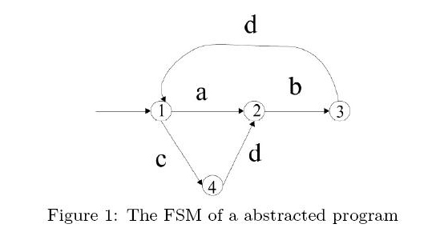
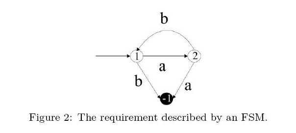

Home Page
F.A.Qs
Statistical Charts
Past Contests
Scheduled Contests
Award Contest
| Online Judge | Problem Set | Authors | Online Contests | User | ||||||
|---|---|---|---|---|---|---|---|---|---|---|
| Web Board Home Page F.A.Qs Statistical Charts | Current Contest Past Contests Scheduled Contests Award Contest | |||||||||
|
Language: Can a Complicated Program Go Wrong?
Description Software systems in practice can be very complicated, particularly when they are implemented by distributed, networked, multi-threaded, or concurrent techniques. Debugging these systems is hard, because the systems can go into one of so many possible states. Image that in any time, you take a snap shot of the memory (or variable values) of a program. That is a state of the program. Typically, a program executes a statement to move from one state to another.
Suppose we want to check if a program can behave correctly. We first abstract a program into a finite-state machine (FSM). An FSM is shown as Figure 1. A state is illustrated as a circle. A starting state is pointed by an edge without symbol and source state. The edge symbols a, b, c,d represent the actions which cause the state transition.  Theoretically, the program contains the following behaviors abdabdabdabd..... abdcdabdcdabdcd.... cdbdcdbdcdbd...... abdcdbd......... .................. There are more infinite sequences to go on. Each infinite sequence is a possible run of the FSM. The set of these infinite sequences is called the behaviors of the program. Sometimes, we want to check if a program can go wrong in any of these possible behaviors. For example, suppose action a is to request a memory and b is to release a memory. We may want to make sure a always occurs before b in any run and b should not occurs without a. We can describe this requirement by an FSM as well (see Figure 2). The black state represents a trap state (numbered -1), a state which once a run goes in, it cannot go out. When a run enters a trap state, the requirement is violated.  Given an FSM and a requirement (both described by FSM), your goal is to write a program to answer if the requirement is satisfied by all the possible behaviors of FSM or can be violated by at least one run. For example, FSM in Figure 1 has a run abdcdb..... which violates that requirement FSM. The second b appears without an a occurs first. The requirement is violated. Input The test file begins with a number n, n <= 10, the number of test cases. In each test case, there are two FSMs to read in. The first FSM is the program and the second is the requirement. Each FSM begins with a line of three numbers s e i, where s is the number of states, e is the number of edges. 2 <= s <= 500 and 2 <= e <= 2000, and i is the starting state of the FSM. Following the three numbers are e lines of edges. Each edge begins with starting state, action symbol (a–z), and the destination state. A trap state is represented by '-1'. A blank and empty line is used to separate the data of two FSMs. Output For each test case, please output "satisfied" if no runs of program violate the requirement. Output "violated" if at least one run can go into a trap state. Sample Input 2 4 5 1 1 a 2 2 b 3 1 c 4 4 d 2 3 d 1 3 4 1 1 a 2 2 b 1 1 b -1 2 a -1 4 5 1 1 a 2 2 b 3 1 c 4 4 a 2 3 d 1 3 4 1 1 a 2 2 b 1 1 b -1 2 a -1 Sample Output violated satisfied Hint You need to figure out a way to "merge" two FSMs, i.e., to obtain a new FSM which has composite behaviors of the two FSMs. Next, search for the trap state in that composite behaviors if any. Source |
[Submit] [Go Back] [Status] [Discuss]
All Rights Reserved 2003-2013 Ying Fuchen,Xu Pengcheng,Xie Di
Any problem, Please Contact Administrator